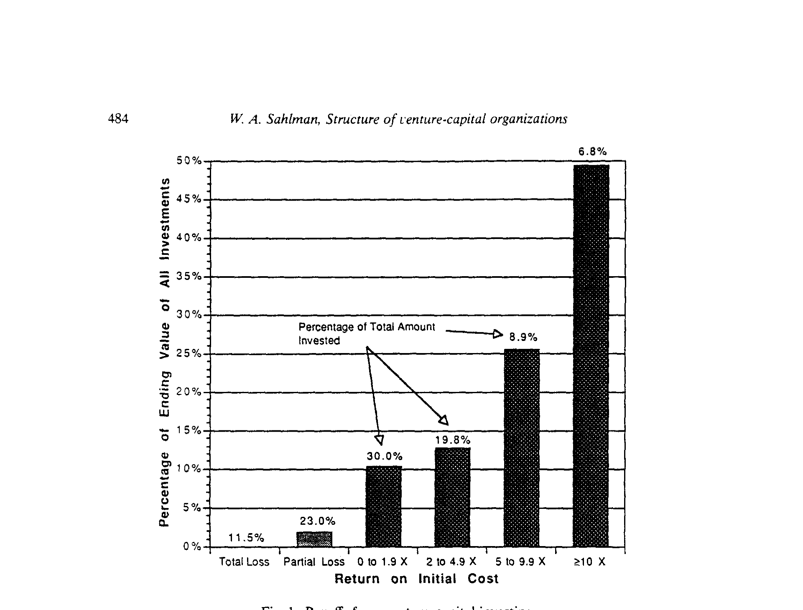
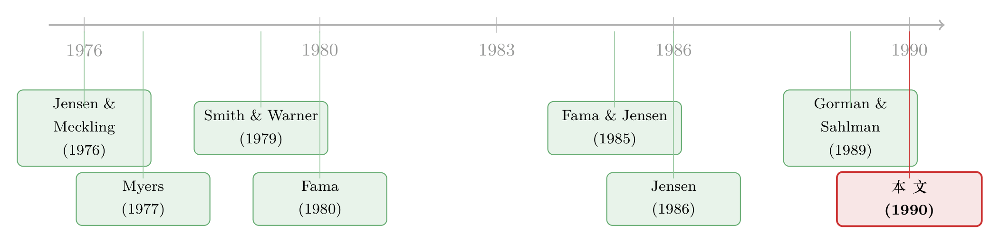

把钱分成好几笔给你——风险投资如何驯服「不确定」
本文读的是 Sahlman (1990, Journal of Financial Economics)：风险投资 (venture capital) 这个行业，在「极度不确定 + 严重信息不对称」的环境里，演化出了一整套精巧的契约与运营惯例——分阶段注资并保留「放弃期权」、把报酬死死绑在价值创造上、再留好「逼着把钱还出来」的退出通道。它们分别对付三道难题：选谁 (sorting)、防偷懒 (agency)、省成本 (operating cost)。这篇文章不是一篇回归论文，而是一份对「组织形式」的深描——它告诉你，风投之所以敢投那些没人敢投的生意，靠的不是胆子大，而是合同写得好。
1 一个几乎不可能被资助的生意
先想象这样一桩生意：一个工程师，带着一张草图、一个原型，告诉你他要做一台谁都没见过的机器。他没有收入，没有抵押品，甚至连一支完整的管理团队都还没凑齐。他需要钱——而且需要的是「股本」，因为他随时可能血本无归，没有任何银行肯借给他。
更麻烦的是：他懂技术，你不懂；他知道这事到底有几成把握，你只能听他说。等你把钱投进去，他完全可以拿着你的钱去追求他自己的名声、他自己的舒适，甚至他自己的「再试一把」，而把你的本金慢慢烧光。
这是一桩典型的、被信息经济学判了「死刑」的生意：高度不确定 (uncertainty)，加上委托人与代理人之间严重的信息不对称 (information asymmetry)。按教科书的逻辑，这样的市场应该「柠檬化」——好项目融不到资，坏项目挤满市场，最后整个市场关门。
可现实是，这个市场不但没关门，还孵出了 Apple、Intel、Microsoft、Sun、Genentech、Compaq……
这就是本文要解的谜：在一个理论上「不该存在」的市场里，风险投资是怎么把交易做成的？ 作者 Sahlman 的回答只有一句话——答案全写在合同里。
2 先看清这个行业长什么样
在拆合同之前，作者花了不小的篇幅，把这个行业的「体型」量给你看。这一节看似只是背景，其实是后面所有论证的地基：正因为回报分布是「那个样子」，合同才必须写成「这个样子」。
到 1988 年，全美约有 658 家风投机构，管理着略超 $31 billion 的资本，雇了 2,500 名专业人员。但资源高度集中：最大的 89 家机构控制了大约 58% 的资本，平均每家管着将近 $200 million。每年这些机构大约投出 $3 billion，撒向不到 2,000 家公司——要知道一家大型风投每年能收到上千份商业计划书，最后真正投的只有十几家。
钱投向哪？大约 15% 给早期 (early-stage)，65% 给后期 (later-stage)，剩下 20% 投向杠杆收购或并购。而且其中大约三分之二的钱是追加投进已有的组合公司，只有三分之一投给新项目。这个「三分之二」的细节后面会变得很关键——它正是「分阶段注资」的统计指纹。
那回报呢？这才是全文的「核武器」级事实。1965–1984 年间，29 只风投合伙基金的中位实现复合年化收益超过 26%。但「平均」这个词在这里极具欺骗性。根据 Venture Economics (1988c) 的数据：13 家机构在 1969–1985 年间做的 383 笔投资里，超过三分之一血本无归，超过三分之二的回报还不到本金的两倍。
那钱从哪儿来的？答案藏在最右边那根柱子里：只有 6.8% 的投资，回报超过 10 倍，却贡献了整个组合最终价值的 49.4%、利润的 61.4%。

Figure 1: Payoffs from venture-capital investing
如图 1 所示，这是一个极度右偏 (right-skewed) 的分布。总共投入 $245 million，最终变成 $1.049 billion（4.3 倍），而其中近一半的价值，来自那一小撮「全垒打」。Apple 就是教科书案例：1978–79 年投进去的 $3.5 million，到 1980 年底上市时值 $271 million。
记住这张图的形状。风险投资的本质，不是「平均赚 26%」，而是「绝大多数会亏，靠极少数赢家把一切赚回来」。 一个理性的投资人，面对这样的赔率，他要的不是「赌得准」，而是「输得起、且能在赢家身上加注」。这正是后面所有合约设计的出发点。
3 这不是一篇回归论文——它的「数据」是什么
得先把话说清楚：这不是一篇靠双重差分或工具变量来识别因果的实证论文，所以读它时不必去找 β 和 t 值。它属于另一个传统——对组织形式的制度性、契约性描述 (institutional / contracting analysis)，方法上更接近 Williamson 和 Jensen-Meckling 那一脉。
作者的「数据」来自两处：一是 Venture Economics（行业最权威的信息源，出版 Venture Capital Journal）的统计；二是他自己八年的田野研究——20 个哈佛商学院案例、若干技术与行业笔记，外加对 25 家风投管理团队、超过 150 位风险投资人、约 50 支被投团队的实地访谈。
所以它的「识别」不在统计意义上，而在逻辑意义上：先观察到合同条款长成某个样子，再反推这些条款在解决什么问题。 这种「从制度倒推功能」的写法，正是 Jensen-Meckling 范式的标准动作。
4 真正关键的一步：把钱分成好几笔给你
现在进入全文的核心。作者把风投合同里反复出现的三个特征提炼出来：
- 分阶段注资，并保留「放弃」的选择权 (staging the commitment of capital and preserving the option to abandon)；
- 把报酬直接绑定到价值创造上 (compensation directly linked to value creation)；
- 保留迫使管理层把投资收益分配出来的途径 (preserving ways to force management to distribute proceeds)。
这三条分别对付三个根本问题：选谁的 sorting problem、防偷懒的 agency problem、省成本（含税）的 operating-cost problem。
但如果只能记住一条，那就是第一条——分阶段。这是整篇文章最优雅、也最值得反复咀嚼的洞见。
回到第 2 节那个「三分之二的钱是追加投资」的事实。风投从不把钱一次性给你。一支基金把资本分成好几轮，每一轮只够撑到下一个「里程碑」：原型做出来、设计完成、试产、第一次盈利、推出第二款产品、直到 IPO。表 2 把这些阶段——种子、初创、第一阶段、扩张、第三阶段、快速增长、过桥、退出——一字排开。每一轮注资，都以「上一轮的成绩单」为前提。
为什么这么做？因为这等于给投资人买了一份「放弃期权」。
接着，一个自然的问题是：这跟「期权」有什么关系？想想第 2 节那张右偏的图。每一笔风投，本质上都像一份看涨期权——下行被锁死在「亏掉这一轮投进去的钱」，上行却是开放的（Apple 那种 80 倍）。而分阶段做的事情，是把「一份大期权」拆成「一串小期权」：每过一个里程碑，投资人就站在一个新的决策点上，手里攥着「继续行权（追投）」还是「弃权（不投，让它死）」的选择。
这就是 staging 的精髓：它不是为了少出钱，而是为了买回「在坏消息到来时及时离场」的权利。 当一家公司进度落后、烧钱超预算，投资人可以拒绝下一轮——Federal Express 就是活例子：它 1973–74 年融了三轮，第三轮每股价格被砍到 $0.63，而调整后第一轮价格高于 $200。如果没有「分阶段 + 重新定价」，第一轮的投资人早就被一次性套牢了。
反过来，这也极大地缓解了 agency problem。创业者知道，下一笔钱取决于这一阶段的真实表现，于是他没法靠「画饼」混下去——他必须真的把里程碑做出来。Gorman 与 Sahlman (1989) 那篇《风投到底在干什么》正好补上了另一半：风投不只是出钱的人，他们坐进董事会、积极参与管理，是「主动型投资者」(active investors)。（关于「主动型投资者」如何重塑治理，可参见《送别迈克尔·詹森：一个相信市场、却毕生研究市场失灵的人》。）
而第二条——把报酬绑到价值创造上——其实是同一逻辑在「投资人↔风投」这一层的复刻。这里出现了本文强调的双重委托代理结构：外部投资人（养老金、捐赠基金、保险公司，1988 年贡献了新资本的 64%）是委托人，风投是代理人；可到了下一层，风投又成了委托人，被投公司的创业者成了代理人。普通合伙人 (general partner) 自己只出大约 1% 的资本，却要替出了 99% 的有限合伙人 (limited partner) 操盘——这中间天然有代理风险。
行业的解法是把风投的钱绑死在结果上：附带权益 (carried interest)、有限的基金期限、以及资本只在头 3–5 年投出去的约定。报酬不来自「管了多少钱」，而来自「赚了多少钱」。（这条「绑定」逻辑，后来被 Gompers-Lerner 这一脉系统化；而它在跨境投资里如何变形，可参见《持股比例被法律按住，他便用「投资额」说话》。）
第三条——保留「逼着把钱还出来」的途径——则直指 Jensen (1986) 的自由现金流问题。被投公司一旦成功、开始产生现金，创业者就有动机把钱留在手里去搞「帝国扩张」。风投的防御是预设好退出机制（IPO、被并购、回购），确保收益最终回流给投资人，而不是烂在公司账上。（这正是自由现金流理论的微观对应，详见《现金为什么一定要「还」出去？——四十年后，重读 Jensen 的自由现金流》。）
于是反转出现了：那个「理论上不该存在」的市场，并不是靠某个聪明人一拍脑袋设计出来的，而是在长期博弈中演化出了一套自洽的契约结构。每一条款，都是对某一类信息问题的精准回应。
5 风投 vs 公司 vs 杠杆收购：三种「治理操作系统」
文章的另一条暗线，是把风投跟两种「竞品」放在一起比：传统的公开上市公司，和杠杆收购 (leveraged buyout, LBO) 组织。
作者的观点是：这三者其实都在「募钱→投项目」，许多风投支持的项目（比如开发一款新的计算机硬件外设）和大公司内部立项的项目并无二致。真正不同的，是治理系统 (governance system)。
- 大公司：所有权与控制权分离，经理人面对的是分散、被动的股东，监督薄弱，自由现金流容易被滥用；
- LBO：用高杠杆和高度集中的股权，把经理人的脚架在火上烤；
- 风投：用分阶段注资 + 主动董事会席位 + 绑定报酬，在「极早期、极不确定」的场景里实现强监督。
把这三者并置，作者其实在说一件更大的事：不存在一种放之四海而皆准的「最优组织」，只有针对特定信息环境的「最适配契约」。 风投这套打法，恰好是为「高不确定 + 高信息不对称 + 高成长期权」量身定做的操作系统。
6 文献脉络
这篇论文站在 1970 年代末那场「契约革命」的肩膀上。最上游是 Jensen 与 Meckling (1976) 的代理成本理论——把公司看成一束契约 (nexus of contracts)，以及 Fama (1980)、Fama 与 Jensen (1985) 对所有权、控制权与组织形式的分解；并行的是 Williamson (1975, 1988) 的交易成本理论。这一脉提供了「用契约对付信息问题」的分析语言。

往下，是一批专门研究「金融契约如何缓解信息不对称」的文章：Ross (1977) 的激励信号理论、Leland 与 Pyle (1977) 的信息不对称与金融中介、Bhattacharya (1979) 的股利信号、Myers (1977) 的公司借债决定因素，以及 Smith 与 Warner (1979) 对债券契约的分析——后者尤其是本文方法论上的「同门」：同样是「逐条拆解契约条款在防什么」。再往后，Jensen (1986) 的自由现金流、Jensen (1989) 的 LBO 与「破产私有化」，把同一套逻辑推向了大公司与收购市场。
本文 (Sahlman, 1990) 所处的位置，是把这套「契约—代理—治理」的分析框架，第一次系统地、完整地应用到风险投资这一特定组织形式上，并以「分阶段注资 = 放弃期权」作为统摄全文的核心机制。它和同一期 JFE 上 Barry 等人 (1990) 关于风投在公司上市过程中的作用，共同构成了风投学术研究的奠基性文献。后来 Gompers 的「grandstanding」、风投契约的结构化建模、以及对风投真实回报的重估，都是从这里生长出去的（参见《看上去赚翻了的风险投资，其实只是一把彩票》与《VC 拿走的，从来不止「一半的饼」》）。
7 评论与延伸（Q&A + 研究方向）
(a) 几个可能的疑问
Q：这篇文章没有回归、没有 t 值，凭什么发在 JFE 上、还成了经典？
因为它解决的是一个「机制」问题而非「因果」问题。1990 年前后，风投学术几乎是一片空白，连「这个行业到底怎么运作」都没人系统讲清楚。本文用田野研究 + 行业数据，把契约结构与其经济功能一一对应起来，提供了后续所有实证研究赖以站立的概念地基。它的贡献是「定义问题、给出框架」，而不是「估一个系数」。
Q：「分阶段注资」和普通的「分期付款」有什么本质区别？
分期付款是无条件的、按日历推进的；分阶段注资是有条件的、按里程碑推进的，而且每一轮都伴随重新估值和重新谈判。关键差别在于那份内嵌的「放弃期权」：投资人保留了在坏消息出现时单方面终止的权利。Federal Express 第三轮每股
$0.63（对比第一轮调整后>$200）就是这份期权被「重新定价」的痕迹。
Q：既然 staging 这么好，为什么不无限细分、每周注资一次？
因为每一轮注资都有成本——尽职调查、谈判、法律文件、董事会协调，这正是文中第三个问题 operating-cost problem。注资轮次是「期权价值」与「交易成本」之间的权衡：分得越细，放弃期权越值钱，但运营成本也越高。现实中平均持有期
4.9年、分若干轮，是这个权衡的解。
Q：那张「6.8% 贡献近一半价值」的右偏分布，会不会只是事后幸存者偏差？
部分是。文中也坦承行业回报数据「向下有偏」（会计惯例倾向于低估账面价值），且可靠数据只覆盖 1960s 中到 1980s 中。但右偏这个形状本身是稳健的：Huntsman-Homan (1980)、Venture Economics (1985, 1988c)、Keeley (1986)、Horsley Keogh (1988) 多个独立样本都得到同样的「少数赢家撑起全部」的结论。形状可信，绝对水平要打折扣。
Q：双重委托代理结构里，哪一层的代理问题更严重？
文章暗示两层都被认真对付了，但工具不同。投资人↔风投这层，靠 carried interest、有限基金期限、GP 自投
1%「跟投」来对齐；风投↔创业者这层，靠分阶段注资、董事会席位、可转换优先股等控制权条款。有意思的是，正因为风投自己也被有限合伙人盯着，他们才有动力去当一个「凶」的监督者——监督是会沿着委托链向下传导的。
Q：这套机制在今天还成立吗？
核心机制（staging、绑定报酬、退出通道）依然是风投的骨架。但本文写于 1990 年，彼时基金平均规模、轮次结构都远小于今天。当代「巨型轮次」「一次性写大支票」「创始人友好条款」在一定程度上削弱了放弃期权——这恰好为「staging 强度变化如何影响回报与治理」提供了一个可检验的现代命题。
(b) 几个可能的研究问题与提案
1. 把「放弃期权」定量化，并检验它的价值
【经济故事】本文把 staging 讲成一份放弃期权，但从未给它定价。如果能把每一轮注资建模为一份复合期权 (compound option)，就能估出「分阶段」相对「一次性注资」到底创造了多少价值，以及在什么样的不确定性水平下价值最大。 【可行性】中。需要轮次级别的注资额、估值与里程碑数据（PitchBook / Crunchbase 可部分覆盖），识别难点在于轮次结构本身是内生的——可考虑用行业层面的「典型里程碑节奏」作为工具变量。
2. 把这套契约逻辑搬到公司债与信用市场
【经济故事】风投用「分阶段 + 放弃期权」对付股权侧的信息不对称；债权人其实也在用类似工具——债务契约 (covenants)、分期放款、降级触发条款，本质上都是「保留中途离场/收紧的权利」。能否把 Smith-Warner (1979) 与本文统一在「分阶段授信 = 放弃期权」的框架下，比较股权与债权在同一信息环境下的契约选择？ 【可行性】高。债务契约数据 (Dealscan、债券募集说明书) 远比风投数据可得，且降级触发条款是干净的「期权行权点」。可与《把「降级就还钱」写进债券契约》对话。
3. 外资有限合伙人与风投契约的关系
【经济故事】1988 年外资 (Foreign) 在风投资本来源中占
8%–14%（表 1 面板 B）。外资 LP 与本土 LP 在信息劣势、监督能力、退出偏好上系统性不同，这是否会改变 GP 的报酬结构与基金条款？这与「外资到底是不是耐心资本」的大辩论直接相关。 【可行性】中。需要 LP 构成数据（部分基金披露），识别可用养老金监管变化或汇率冲击带来的外资流入外生波动。可与《外资真是「蝗虫」吗？》与《外资是「追涨」的，但真正可怕的是他们「赖着不走」》对照。
4. 退出通道的「流动性」如何反向定价进入条款
【经济故事】本文第三条机制是「保留逼着分配的途径」，而退出通道（IPO 窗口、并购市场）的流动性是周期性的（文中明说 IPO 窗口「开开关关、极不可测」）。一个自然假说是：当预期退出更难时，进入时的折价更深、控制权条款更严。 【可行性】高。可用 IPO 市场的冷热作为退出流动性代理，结合轮次估值数据。与《打折卖新股，是为了补偿你「将来不好脱手」的那份担心》的逻辑一脉相承。
8 我的判断
贡献。 这篇文章的价值不在某个数字，而在它给了一个混沌行业一副清晰的「契约骨架」。它最漂亮的一笔，是把「分阶段注资」从一个看似平淡的操作惯例，重新诠释为「一串放弃期权」——这一下子把风投与实物期权 (real options)、与代理理论焊接在了一起。三十多年后回看，后续整个风投文献几乎都在填它留下的格子。
对识别的担忧。 必须承认它的「识别」是逻辑性的，不是因果性的。「合同长这样，所以它在解决那个问题」是一种功能主义解释，存在事后合理化的风险——同一套条款完全可能有别的功能解释（比如税收、声誉、路径依赖）。回报数据的幸存者偏差与会计向下偏误，作者虽诚实标注，但也确实限制了任何「风投回报有多高」的断言。它更像一张精确的地图，而不是一台测因果的仪器。
后续想看到什么。 我最想看到的，是把那份「放弃期权」真正定价出来，并在轮次级别数据上检验：staging 越密、放弃期权越值钱的基金，是否真的回报更高、代理成本更低？以及在当代「巨型轮次、创始人友好」的环境下，这份期权被削弱之后，治理与回报付出了怎样的代价。本文埋下的那颗种子——契约即期权——至今仍未被完全收割。
参考文献
- Barry, C. B., Muscarella, C. J., Peavy III, J. W., & Vetsuypens, M. R. (1990). The role of venture capital in the creation of public companies: Evidence from the going-public process. Journal of Financial Economics 27(2), 447–471.
- Bhattacharya, S. (1979). Imperfect information, dividend policy and the 'bird in the hand' fallacy. Bell Journal of Economics 10(1), 259–270.
- Fama, E. F. (1980). Agency problems and the theory of the firm. Journal of Political Economy 88(2), 288–307.
- Fama, E. F., & Jensen, M. C. (1985). Organizational forms and investment decisions. Journal of Financial Economics 14(1), 101–119.
- Gorman, M., & Sahlman, W. A. (1989). What do venture capitalists do? Journal of Business Venturing 4(4), 231–248.
- Jensen, M. C. (1986). The agency costs of free cash flow: Corporate finance and takeovers. American Economic Review 76(2), 323–329.
- Jensen, M. C., & Meckling, W. H. (1976). Theory of the firm: Managerial behavior, agency costs and ownership structure. Journal of Financial Economics 3(4), 305–360.
- Leland, H., & Pyle, D. (1977). Informational asymmetries, financial structure, and financial intermediation. Journal of Finance 32(2), 371–387.
- Myers, S. C. (1977). Determinants of corporate borrowing. Journal of Financial Economics 5(2), 147–176.
- Ross, S. (1977). The determination of financial structure: The incentive-signalling approach. Bell Journal of Economics 8(1), 23–40.
- Sahlman, W. A. (1990). The structure and governance of venture-capital organizations. Journal of Financial Economics 27(2), 473–521.
- Smith, C. W., Jr., & Warner, J. B. (1979). On financial contracting: An analysis of bond covenants. Journal of Financial Economics 7(2), 117–161.
- Williamson, O. E. (1975). Markets and Hierarchies: Analysis and Antitrust Implications. Free Press.